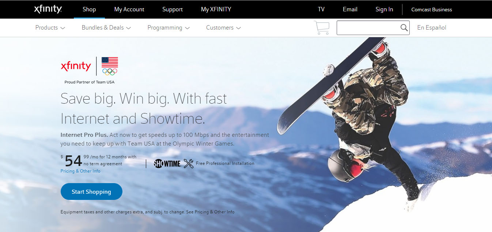
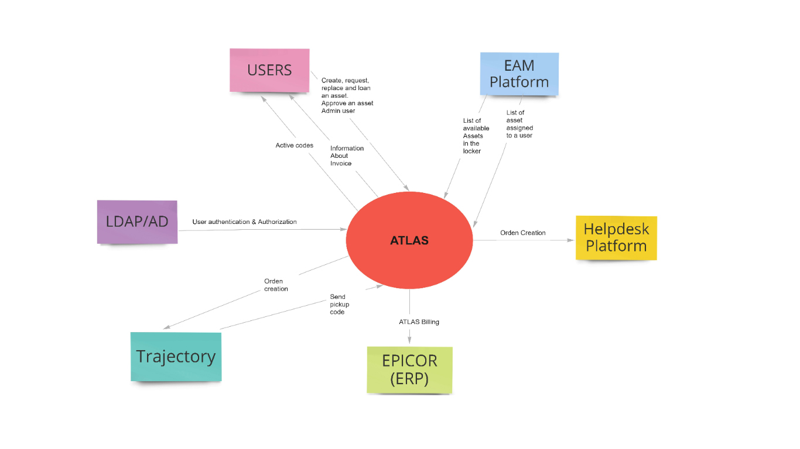
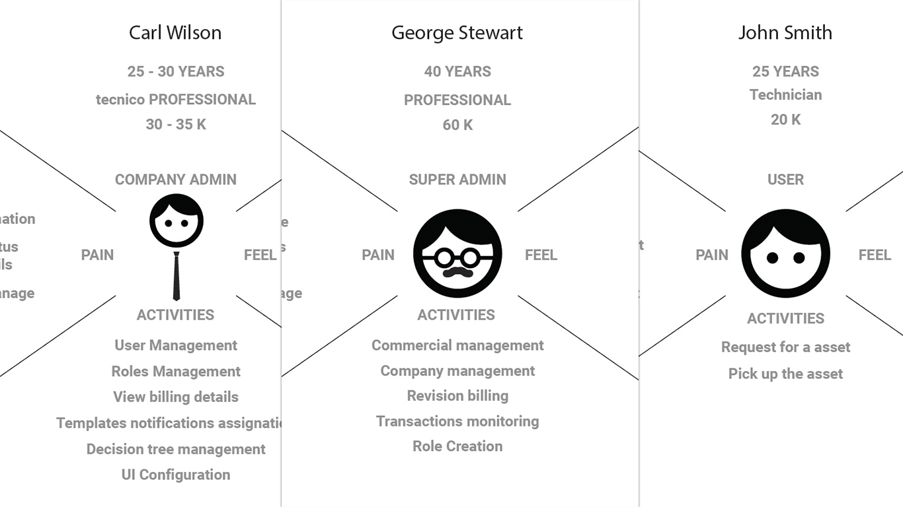
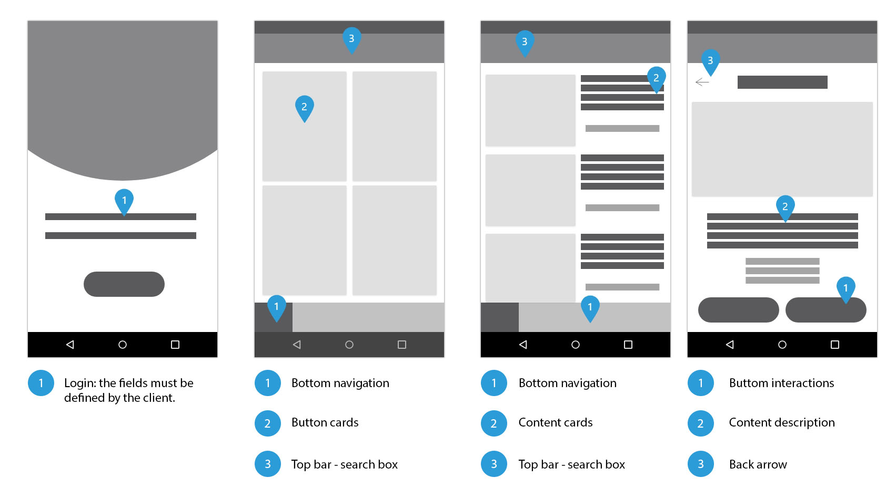
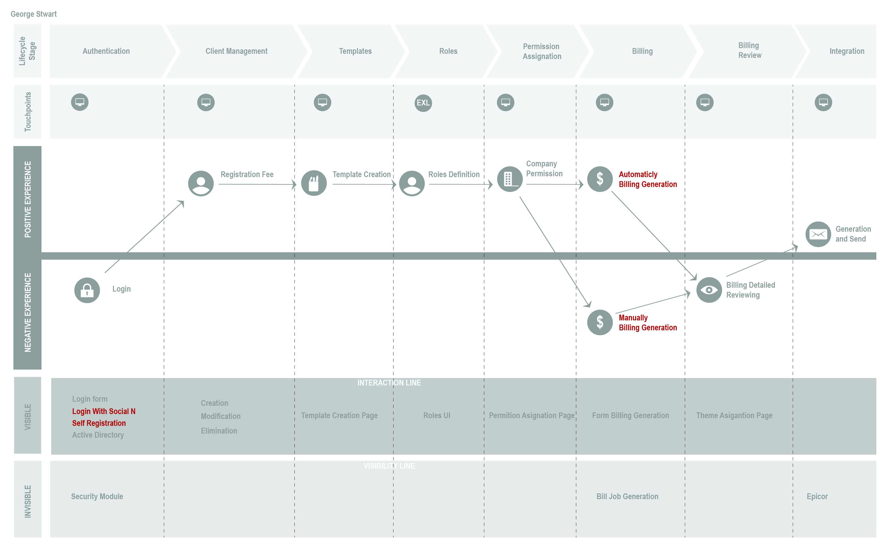

JUAN CARVAJAL - I’m a WIZARD — Sr. UX/UI and Product Designer
About
Comcast Corporation is a global media conglomerate providing cable television, Internet, and telephony services. Headquartered in Philadelphia, Pennsylvania, Comcast employs over 136,000 people worldwide and is currently the second-largest media conglomerate in the world.

Problem
In large organizations with highly distributed and mobile workforces, IT departments face significant challenges. Limited IT staffing makes it difficult to provide rapid support across various locations. For example, one region might have 30,000 employees served by only 115 IT staff members, with around 20,000 employees operating remotely or in the field. The primary challenges include:
Rapidly issuing replacement or new assets (laptops, phones, tablets, etc.) for employees with malfunctioning or outdated equipment.
Facilitating the efficient exchange and return of assets to minimize downtime and improve service uptime.
Managing logistical gaps due to physical distances between IT support and remote employees.

Solution
Our solution empowers users with a self-service platform that streamlines asset management while enhancing communication between end users and IT staff. The platform will allow users to:
Request New Assets: Enable quick issuance of new or replacement assets when required.
Replace Broken or Aged Assets: Simplify the process for upgrading or replacing malfunctioning equipment.
Borrow and Return Assets: Ensure a smooth workflow for asset borrowing and the subsequent return of outdated equipment.
This solution reduces response times, bridges the communication gap, and functions as a force multiplier for IT teams, significantly increasing operational uptime.
UX/UI Approach and Process
My approach is grounded in a robust design process that emphasizes user-centric strategies and cross-functional collaboration. Key activities include:
Stakeholder Workshops & User Interviews: Engaging with IT teams and end users to identify pain points and gather insights.
Personas Development: Crafting detailed personas that represent diverse user profiles to address specific needs within the platform.
User Journey Mapping: Creating comprehensive journey maps to visualize user interactions and identify opportunities for process improvement.
Wireframing & Prototyping: Developing low-to-high fidelity prototypes to test and iterate on design solutions that meet both functional and aesthetic requirements.
Iterative Testing & Feedback: Conducting usability testing sessions to refine the interface and ensure the design is intuitive, accessible, and efficient.
Key Deliverables
Personas: Detailed profiles representing various user groups, highlighting their needs and challenges.
Wireframes: Initial design layouts for the platform, focused on usability and accessibility.
User Journey Maps: Visual representations of user interactions across different touchpoints to ensure a seamless experience.
Result: A hybrid Web and Mobile App that delivers an intuitive, efficient, and cohesive experience for both IT teams and end users.



Result
The final product is a user-friendly hybrid application that not only accelerates IT service delivery but also improves asset management across the organization. This solution underscores the importance of a structured UX/UI process, ensuring that every element is tailored to enhance user experience and drive business efficiency.
This comprehensive approach reflects best practices in UX/UI design, combining thorough research, strategic planning, and iterative testing to create a solution that meets the evolving needs of large, distributed workforces.